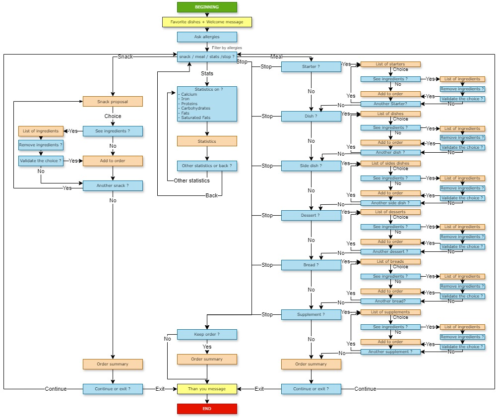
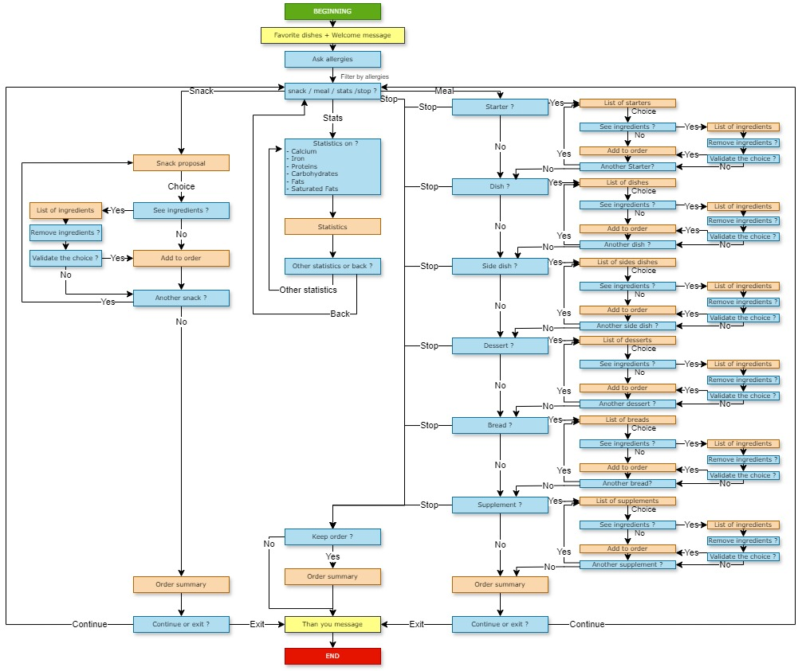
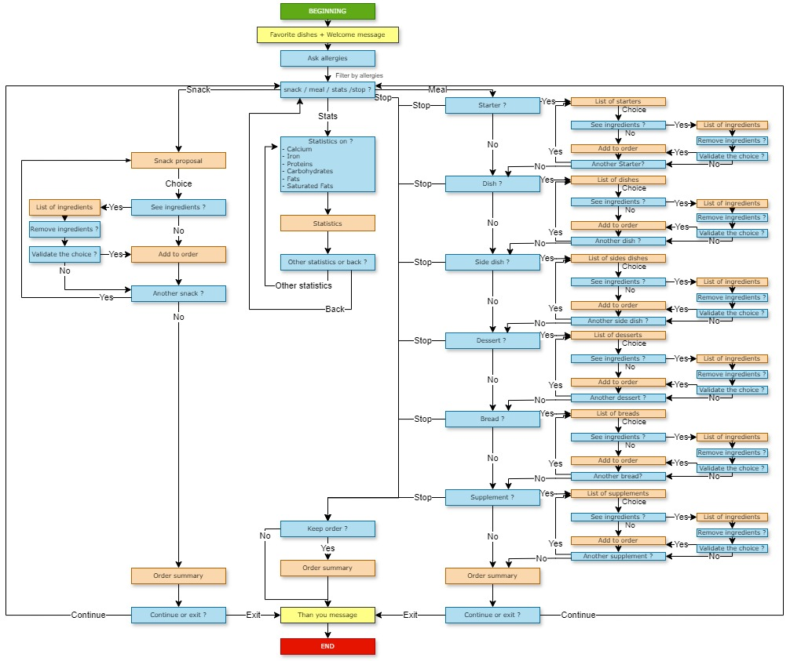
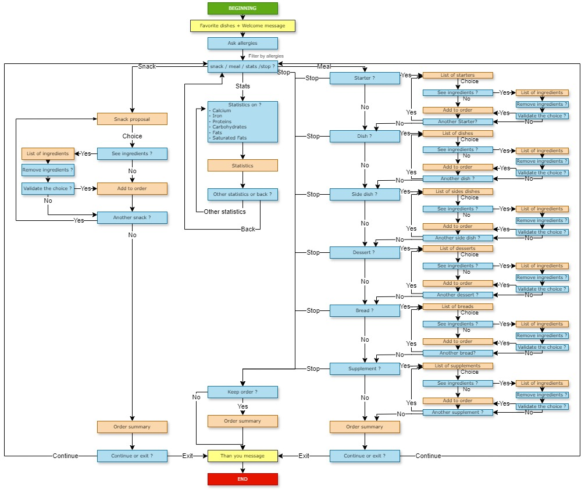

À propos du projet
Ce projet facilite la gestion, l’analyse et la visualisation des données liées aux menus et plats, avec une attention particulière portée aux allergies, nutriments et validation des données. Il s’adresse aux gestionnaires de restauration collective souhaitant optimiser la qualité et la sécurité alimentaire.
Télécharger le rapport PDFFonctionnalités principales
Analyse descriptive
Gestion des allergies
Suivi des nutriments
Validation des données
Visualisations interactives
Aperçu des graphiques
 

 

Démo
Vidéo de démonstration hébergée sur Google Drive.
L'équipe
Contact
Email : imadougagi@gmail.com
GitHub : https://github.com/
GitLab : https://gitlab-mi.univ-reims.fr/users/mado0007/projects
LinkedIn : ismael-madou-gagi-grema